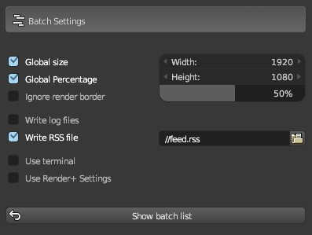

Batch Renders¶
Batches let you run multiple renders in a sequence automatically. These render jobs can use different scenes and settings that override the ones set in the scene.
Simply add and setup some render jobs, then click the “Start Batch” button to run the batch.

Step-by-step Workflow¶
- Start by adding a new render job (click the + button in the batch panel)
- Give it a name by changing the name property or double-clicking it’s name in the list
- Select a scene to render, if you leave it blank it will use the current one
- Optionally select a camera or specific render layer to use
- Set an output path for your job. This path must be different from other jobs, if you leave it blank the path set in the output panel will be used. Remember you can’t have two jobs with the same path though.
- Optionally set custom overrides for the job. See the Custom Overrides section to learn more.
- Repeat for each render job you want to include
- Optionally set batch settings by clicking the triangle icon next to the start button
- Click the Start batch button to start the batch rendering
- Kick back and relax :)
You can also monitor your batch’s progress using RSS, by watching the log files or the terminal output. See below for more information.
Render job tabs¶
Scene Tab
| Setting | Description |
|---|---|
| Name | An identifier for this render job |
| Scene | Scene to use |
| Camera | Camera to use (leave blank to use the current active camera) |
| World | World to use (leave blank to use the current active world) |
| Renderlayer | Use only a specific render layer (leave blank to use all) |
| Animation | Render an animation instead of a still image |
| Custom Frame | Render a specific frame (for stills) |
| Frame Range | Render a specific frame range (for animations) |
| Use External | Use an external blend file |
| Blend File | File path of the blend file to use for this job |
Render tab
| Setting | Description |
|---|---|
| Output | File path to save to |
| Custom Size | Image Size for this job in pixels |
| File Format | Image/Video format to use |
| Samples | Use a different number of samples to render (Cycles only) |
| Render Device | Render using the CPU or choose a GPU (Cycles only) |
| Render Section | Render only a part of the image |
| Threads | Use a specific number of CPU threads |
Note
Some file formats may not be compiled in your version of Blender. Render+ will tell you when you select one of them.
Note
If you set samples or threads to 0, Render+ will use the settings you have set in the scene. The same applies if you set Render Device to “Default”.
Note
GPUs are detected when Blender starts. If for some reason a GPU doesn’t show in the menu, try restarting Blender.
Below the output setting you will also find the Show output folder button. Clicking this button will open the folder where the rendered image will be saved.
Toggling Render Section will show the coordinates of the section, as well as
the Get from Viewport button. If you have a border render set (Ctrl+B
in camera view), you can get it’s coordinates automatically by clicking that
button.
Custom tab
In this tab you can setup custom overrides for the render job. See Custom Overrides Below.
Custom Overrides¶

With custom overrides you can change the value of any property in the scene. All you need is the data path to the property and set the new value in the data column.
Custom Overrides can be used to change specific things for a render job, like color management settings, rig properties, enabling/disabling lights and more.
Click the + button to add a custom override and the - button to remove it. Clicking on the name of a Custom Override lets you change it, while toggling the checkbox next to them disables/enables them (just like in the render jobs list).
Below the new and remove buttons you will find the copy button. Clicking Copy will copy the data value to all render jobs, while adding the override to those that don’t have it. You can use this button to quickly set an override for the entire batch (for instance, setting a custom cycles sampling value).
Note
Note that Render+ doesn’t check for value types or valid ranges, double check your data is valid! Also, don’t forget to add quotes to your strings (eg. “my_string”)
What are data paths?¶
All properties in Blender are organized in different modules and objects. Properties inside objects can be accessed with the dot syntax like so, “bpy.module.object.property”. Properties can be objects, or collections of objects and properties.
For an in-depth explanation and examples check the Blender documentation
Finding the data path¶
Data paths for all overrides are relative to bpy.context.scene. This makes it easier to find the path for a property, since you can simply right-click on any property and select Copy Data Path. You can then go into the data path input and paste it there (Ctrl+v).
If you’re modifying a scene property you don’t have to add anything else, but if the property comes from an object in the scene, you’ll have to add “objects[OBJECT_NAME].” before the path you pasted. Change ‘OBJECT_NAME’ to the name of the object you’re getting the property from.
Override examples¶
| Data Path | Data | Description |
|---|---|---|
| render.engine | ‘CYCLES’ | Set render engine to Cycles |
| objects[‘Lamp’].hide_render | True | Hide object called “Lamp” for render |
| objects[‘Cube’].material_slots[‘Material’].material | bpy.data.materials[‘New_mat’] | Set “New_mat” as material for “Cube” object |
Global Settings¶
Global settings are options that affect the batch or all the render jobs in it. To see the settings click the gear icon next to Start Batch.
| Setting | Description |
|---|---|
| Global Size | Set a single size for all render jobs |
| Global Percentage | Set a size percentage for all render jobs |
| Ignore Render Border | Check to disable the render border setting for all jobs. |
| Write log Files | Write a log file for each job. If disabled, output will go into the terminal. |
| Write RSS File | Check to write information to a RSS file (see below for more) |
| Use Terminal | Run the batch inside a terminal |
| Use Render+ Settings | Use notifications, power off and pre/post actions from the settings panel |
Log files are stored in the same folder as the rendered files. They are named “[OUTPUT_name]_log.txt”.
Global Size will ignore size percentages (set in the dimensions panel) and use the same size for all jobs.
The Terminal used for the Batch can be customized in the addon preferences.
The only options used from the Settings panel are:
- Notifications
- Power Off
- Pre/post actions
RSS¶
RSS is a format used to publish updates on dynamic content like blogs or podcasts. A RSS document is often called a “feed” or “channel”. These feeds can be read using web browsers, web sites, desktop applications, mobile apps and more.
Render+ can generate RSS feeds with information about running batches. You can use these feeds to monitor progress of any number of batches remotely.
To enable it first click the gear button next to the “Start Batch” button to see the global settings. Then check the “Write RSS File” checkbox and select a location to put the file in.
Render+ includes an item for each render job with information about it. The very first item in the list is a summary of the progress of the batch.
You can put the file anywhere in your computer if you intend to watch it only on your PC. If you want to monitor remotely you will have to put the feed in a publicly shared directory, like the Dropbox folder. Any folder that is visible from the web will be OK, all you need is the URL to access the file.
You can see this file in your browser as well. In that case the browser will use the included XLST and CSS style sheets to display the information with a nice design. If you have a script that copies the RSS to a server, make sure you also copy the .xlst and .css files.
You can also customize the CSS to give it your own style, please check the Batch preferences for it.
If you’re into customizing your desktop you could use an application like Geektool (Mac) or Conky (Linux) to show the RSS feed right over your wallpaper. KDE (Linux) also has support widgets to show RSS feeds.
For a (long) list of RSS readers check Wikipedia
Previous Batch Log¶
If you keep Blender open while running a batch, you can access its log once it has finished.
Once your batch is complete, look for the clock icon below the options menu button. This will button will show you when the batch started and when it finished. You can also check status and how long each render job took to render.
External Render Jobs¶
External render jobs render scenes from other blend files. They are marked with a file icon in the batch list.
You can make any render job use an external blend file by toggle the “use external” checkbox.
Note that cameras, scenes and renderlayers don’t autocomplete or show options for external jobs. This is a technical limitation of the API. There are also no checks to the camera or scene names you input. Please make sure they are correct before starting a batch, otherwise that render might fail.
Also you can leave the output path blank in external jobs, Render+ will use the output from the blend file. This way you can set different paths in each blend file, and then have the batch process use them automatically.
Scripting¶
You may be interested in scripting to extend R+ to fit your own needs better. You can find everything batch related in bpy.context.scene.renderplus.batch. These are the properties contained in it:
| Property | Description |
|---|---|
| jobs | List of render jobs |
| index | Int, Index of the currently selected job in the ui |
| use_rss | Boolean, True to write a RSS file |
| rss_path | String, Filepath for RSS file |
| write_logs | Boolean, True to write log files |
| use_global_size | Boolean, True to force a specific size |
| global_size_x | Int, horizontal global size in pixels |
| global_size_y | Int, vertical global size in pixels |
| ignore_border | Boolean, True to disable render border |
Each job in the list contains the following properties:
- name
- scene
- layer
- camera
- enabled
- size_custom
- size_x
- size_y
- animation
- frame_custom
- frame_still
- frame_start
- frame_end
- output
- use_external
- blend_file (only set if use_external is True)
- overrides
Animation, size_custom and frame_custom are booleans used to enable or disable settings.
You can add new jobs with bpy.context.scene.renderplus.batch.jobs.add(). Use the python console to know more.
You can also import render+ modules and inspect them in the python console:
>>> import renderplus
>>> import renderplus.stats
>>> renderplus.stats.is_running()
True
>>> help(renderplus.stats.is_running)
Help on function is_running in module renderplus.stats:
is_running()
Detect if stats are still gathering data
If you want to learn more about the batch process check the file “batch_notes.txt” in the addon folder. You may also want to run Blender from a console or terminal to watch the output. Check the manual to launch blender from a terminal